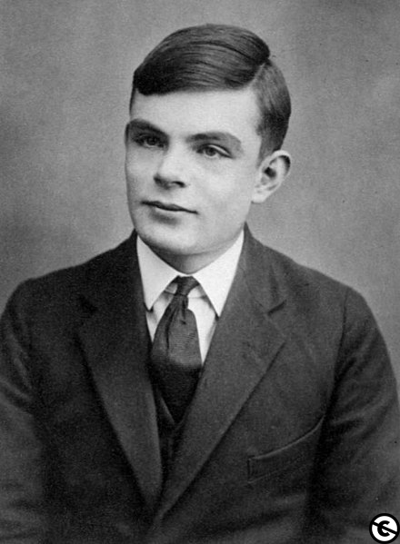
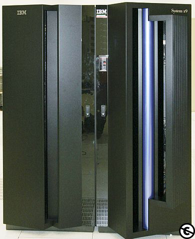
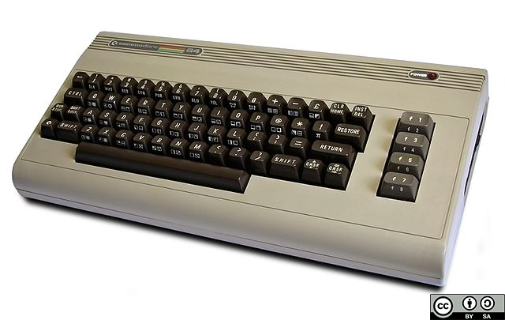

Prvi računalniki so bili narejeni, da izvajajo enoopravilne procese, npr. kalkulator. Osnovne prednosti operacijskega sistema so bile razvite v petdesetih, kot so funkcije nadzornega programa (resident monitor), ki lahko avtomatsko poganjajo različne programe, da se pohitri procesiranje.
Operacijski sistemi niso obstajali v njihovi moderni in bolj kompleksni obliki pred letom 1960. Dodane so bile prednosti strojne opreme, ki je omogočila uporabo zagonskih knjižnic, prekinitev in paralelnega procesiranja.
Leta 1940 novejši elektronski sistemi niso imeli operacijskih sistemov. Elektronski sistemi v tem času so bili programirani na podlagi mehanskih stikal ali žicah na vtičnih ploščah.
To so bili posebni namenski sistemi, ki so npr. generirali balistične tabele za vojsko ali kontrolirali tiskanje plačilnih seznamov na podlagi podatkov na luknjanjih papirnatih karticah.
Potem, ko so bili izumljeni računalniki za programiranje v splošni rabi, so bili uvedeni strojni jeziki (sestavljeni iz nizov števk 0 in 1), da pohitrijo proces programiranja.
V zgodnjih petdesetih 20. stoletja je računalnik lahko izvajal samo en program naenkrat. Program se naloži v napravo in ta naprava bo delovala, dokler se program ne zaključi ali pa zruši.
Pravijo, da je bil mojster za razhroščevanje Alan Turing na zgodnjem Manchester Mark 1 stroju, ki je že vseboval primitivni koncept operacijskega sistema delujočega na načelih univerzalnega Turingovega stroja.
Operacijski sistemi niso obstajali (v moderni in bolj zapleteni obliki) do zgodnjih 1960ih let. Dodane so bile strojne funkcije, ki omogočajo uporabo runtime knjižnic, prekinitev in vzporedno procesiranje.
Ko so v 1980-ih postali priljubljeni osebni računalniki, so za njih naredili operacijske sisteme podobne tistim, ki so delovali na večjih računalnikih.

Alan Turing
Vrsta računalnika, ki je prevladovala do začetka 70. let prejšnjega stoletja. Veliki oziroma osrednji računalniki so imeli velika ohišja (velikosti omare, ki zasedajo cele sobe).
Danes so jih precej izpodrinili zmogljivi miniračunalniki in strežniki (temelječi na osebnih računalnikih), po velikosti pa se z njimi lahko primerjajo sodobni superračunalniki, vendar so neprimerno zmogljivejši od osrednjih računalnikov izpred tridesetih let.
Vidnejši operacijski sistemi za osrednje računalnike vključujejo:
• Burroughs MCP – B5000, 1961 v Unisys Clearpath/MCP, danes.
• IBM OS/360 – IBM System/360, 1966 v IBM z/OS, danes.
• IBM CP-67 – IBM System/360, 1967 v IBM z/VM, danes.
• UNIVAC EXEC 8 – UNIVAC 1108, 1967, v OS 2200 Unisys Clearpath Dorado, danes.

Osrednji računalnik
To so računalniki (ang. microcomputer), katerih osrednja obdelovalna enota je en čip - mikroprocesor.
Mikroračunalniki so nastali v 70. letih 20. stoletja in so predhodniki današnjih osebnih računalnikov.
Ime izvira iz dejstva, da so mnogo manjši od osrednjih računalnikov (mainframe).

Commodore 64, eden najbolj razširjenih mikroračunalnikov
Avtor: Bill Bertram